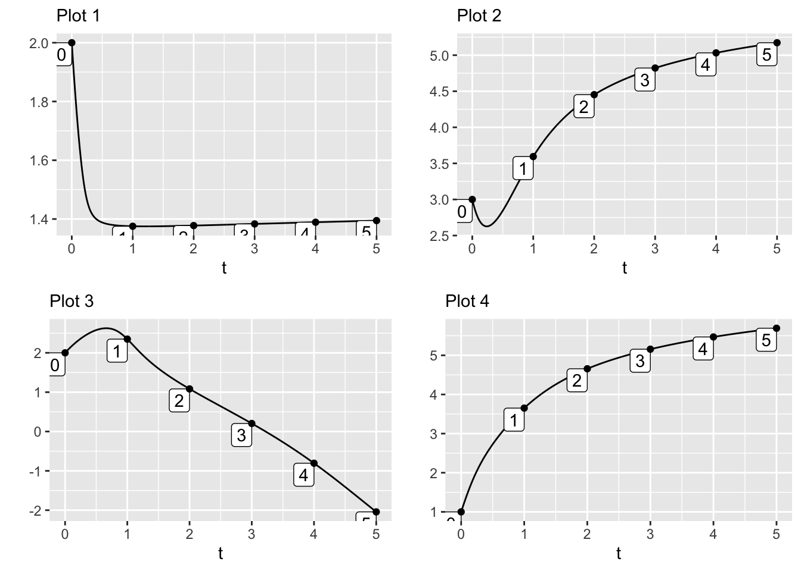

MOSAIC Week 17 Assignment
linear algebra
Remember to hand in your work …
At any point, you can submit your answers by collecting them and uploading them to the class site.
No answers yet collected
If the answers that have been loaded automatically are not yours, press this button before starting your work:
Drill
Exercise 1 This section of MOSAIC Calc describes a dice-free version of the Chutes and Ladders game.
The text mentions a cycle involving state 84. Write down all the other cycles in the flow.
The goal of the game is to get to state 100. From how many initial states (other than 100) will the flow eventually lead to state 100.
The only terminal endpoint for the flow on the state island shown in the upper left corner of the diagram is state 100. Explain why, in the dice-free game, there cannot possibly be another terminal endpoint for the flow on that state island.
Exercise 2 Trace a trajectory from each of the points labeled A, B, C, and D until it reaches the edge of the box. Note the direction in which the trajectory is heading using compass directions.
- Which direction for trajectory A?
rat-find-closet-1
- Which direction for trajectory B?
rat-find-closet-2
- Which direction for trajectory C?
rat-find-closet-3
- Which direction for trajectory D?
rat-find-closet-4
Exercise 3 Trace trajectories from each of the initial conditions A, B, C.

Give a one-word description for the shape shared by all the trajectories.
Give the \((u, v)\) coordinates (roughly) where the trajectories will meet up if continued for a long enough time.
Exercise 4 Consider a dynamical system with state variables \(x\) and \(y\).
- What type of object is shown by the graph \(x(t)\) versus \(y(t)\)?
squirrel-tell-chair-1
- What type of object is shown by the graph \(x(t)\) versus \(t\)?
squirrel-tell-chair-2
- What type of object is shown by the graph \(x(y)\) versus \(y\)?
squirrel-tell-chair-3
- What type of object is the coordinate \((x=2, y=1)\)?
squirrel-tell-chair-4
- What type of object is the \((x,y)\) coordinate plane?
squirrel-tell-chair-5
Exercise 5 Here is a flow field:

All but one of the plots above is a time series from a trajectory starting at one of the initial conditions A, B, or C. The time series might be \(u(t)\) or \(v(t)\) (or neither, for the bogus time series).
- To which of these choices does Plot 1 belong?
chc32-1
- To which of these choices does Plot 2 belong?
chc32-2
- To which of these choices does Plot 3 belong?
chc32-3
- To which of these choices does Plot 4 belong?
chc32-4
Exercise 6
- Plot A ant-keep-screen-1
- Plot B ant-keep-screen-2
- Plot C ant-keep-screen-3
- Plot D ant-keep-screen-4
- Plot E ant-keep-screen-5
- Plot F ant-keep-screen-6
- Plot G ant-keep-screen-7
- Plot H ant-keep-screen-8
Exercise 7 Some of these are first-order dynamical systems, others are ordinary derivatives. For each, say whether it is indeed a first-order differential equation and, if so, what is the name of the state variable.
- Part 1.
- \(\partial_t u = f(t)\)
crocodile-dive-laundry-1
- Part 2.
- \(\partial_x y = g(x)\)
crocodile-dive-laundry-2
- Part 3.
- \(\partial_t z = h(z)\)
crocodile-dive-laundry-3
- Part 4.
- \(\partial_x y = f_2(y)\)
crocodile-dive-laundry-4
- Part 5.
- \(\partial_t t = 1\)
crocodile-dive-laundry-5
- Part 6.
- \(\partial_t u = g_2(u) + g_3(u)\)
crocodile-dive-laundry-6
Exercise 8 Consider the first-order differential equation
\[\partial_t V = g(V)\] with a fixed point at \(V^\star\).
For each of the following mathematical objects, say whether the object is a function or a number.
- \(V\) finch-write-fridge-1
- \(g()\) finch-write-fridge-2
- \(\partial_t V\) finch-write-fridge-3
- \(V^\star\) finch-write-fridge-4
Exercise 9 Consider the differential equation \[\partial_t x = \sin(x)^2 + x + 1\ .\]
- Where is the fixed point?
calf-dive-pot-1
- Which of these functions should be evaluated at the fixed point to assess its stability?
calf-dive-pot-2
- Is the fixed point stable?
calf-dive-pot-3
Use differentiation to verify that \[y(t) = 4 e^{2 t} + 7\] is a solution to the differential equation \[\partial_t y = 2 y - 14\ .\]
Answer
For \(y(t)\) to be a solution of the differential equation, the equation must still be true when plugging in the formula for \(y(t)\).
The left side of the differential equation is \[\partial_t y = 8 e^{2 t} .\] The right side of the differential equation is \[2 y = 8 e^{2 t} + 14 - 14 = 8 e^{2 t}\]
Since the left and right sides amount to the same function of \(t\), \(y(t)\) is indeed a solution to the differential equation.
..id..
For the dynamical system graphed above, sketch a plausible time series solution starting from initial condition \(x_0=-2.5\).
Answer
Here is the solution, quantitatively. Your sketch should capture the times when x is growing slowly and when x is growing fast. It should have the horizontal asymptote
..id..
Exercise 10 Coffee at an initial temperature of \(T=\) 80 degrees C is in a closed thermos at a (very cold) construction site where the ambient temperature is -20 C. Suppose, with the thermos closed, it takes 4 hours for the coffee to fall to a tepid 30 degrees C. The thermos cools in accord with Newton’s Law of Cooling.
Draw a quantitatively reasonable graph of the dynamical function consistent with these facts in the differential equation \[\partial_t T = f(T)\ .\]
Answer
The fixed point will be at -20 C. To judge from the time the coffee takes to fall from 80 degrees C have of the way to -20 C, the half-life of cooling is 4 hours.
This gives us the exponential form \(e^{-a t}\) where \(a\) is such that \(e^{-4 a} = 0.5\), with the units of 4 in hours and \(a\) in hours-1. The numerical value of \(a\) is therefore 0.173 per hour and the dynamical function will be \[f(t) \equiv 0.173(T + 20)\ .\]
..id..
Chapter 39
Exercise 11 We will be using a handful of Greek letters in our mathematical notation. You should learn these by heart:
- \(\alpha\) : alpha (lowercase)
- \(\beta\) : beta (lowercase)
- \(\gamma\) : gamma (lowercase)
- \(\delta\) : delta lowercase
- \(\lambda\) : lambda (lowercase)
- \(\Lambda\) : lambda (uppercase)
- \(\omega\) : omega (lowercase)
- \(\xi\) : xi (lowercase), pronounced “ex-eee”
- \(\eta\) : eta (lowercase)
The last two of these, \(\xi\) and \(\eta\) are the Greek equivalents to the familiar \(x\) and \(y\). We will see \(\xi\) and \(\eta\) as arguments to functions that we will quickly be re-scaling and renaming \(x\) and \(y\).
On a piece of paper, write out each of the following Greek letters and, alongside it, the name of the letter.
- \(\gamma\)
- \(\beta\)
- \(\delta\)
- \(\xi\)
- \(\Lambda\)
- \(\lambda\)
- \(\eta\)
- \(\alpha\)
Exercise 12 Do this exercise on paper.
The graph shows two trajectories, A, B.
Solution containing functions u(t), v(t).
Solution containing functions u(t), v(t).For each trajectory, sketch the time series.
- Trajectory A, variable \(u(t)\)
- Trajectory A, variable \(v(t)\)
- Trajectory B, variable \(u(t)\)
- Trajectory B, variable \(v(t)\)


Chapter 40
Exercise 13 For the following, you can use whatever you like for function names, e.g. \(f_1(), f_x(), g(), h(), h_3()\) and so on. Indicate the names of function inputs by writing them explicitly inside the parentheses in the normal way, e.g. \(g_2(u, v, w)\).
- Write down the framework for a system of differential equations with state variables \(u, v, w\).
- Write down the framework for a system of differential equations with state \(z, u\).
- Write down the framework for a system of differential equations with state variables \(v, x, z\).
Exercise 14 Here is the R/mosaic code implementing a rabbit-fox ecological interaction and plotting out the two time series.
- Part A.
- Using the time-series plots, estimate the period of the cyclic oscillations.
- What is the period of the fox population cycle?
- How large in amplitude (peak to trough) is the fox population cycle?
- How do the cycle period and amplitude for the rabbits compare to those for the foxes?
- Part B.
- Change the initial condition from \(r=2, f=0.5\) to \(r=1, f=0.5\) and plot the time series.
- What is the period of the fox population cycle?
- How large in amplitude (peak-to-trough) is the fox population cycle?
- Part C.
- Leaving the initial conditions as in Part (B), increase the fecundity of the rabbits by 50%. Describe how this changes the time series compared to Part (B).
Exercise 15 We will explore some common pitfalls for using the integrateODE() and traj_plot() functions.
- Part 1.
-
What is the purpose of the
integrateODE()function?
maple-beat-plate-1
- Part 2.
-
What is the proper format to use in specifying the dynamical system to
integrateODE()?
maple-beat-plate-2
- Part 3.
-
What should the left-hand side of the tilde expression look like for a state variable
z?
maple-beat-plate-3
- Part 4.
-
For the dynamical system \[\partial_t x = y\\\partial_t y = -x ,\] what should the
integrateODE()command look like? (Note: we are using...as a placeholder for other inputs that will be needed byintegrateODE().)
maple-beat-plate-4
- Part 5.
- Aside from the tilde-expressions encoding the dynamical system, what other information is absolutely essential to specify when constructing a numerical solution?
maple-beat-plate-5
Part 6. # How should you specify how long you want integrateODE() to carry forward the solution in time, say for 10 time units?
maple-beat-plate-6
Exercise 16 This activity makes use of the following interactive MOSAIC Calc app:

Click on the picture of the app and it will open in a new browser tab. Arrange that new tab side-by-side with the one where you are reading this.
To solve a differential equation with the Euler method, you need two things:
- The differential equation itself. Several choices are available in the selector on the left side of the app. On the right side of the equation is the dynamics(x) function.
- An initial condition \(x(0)\). You can select this with the slider.
You will also need
- A stepsize \(h\). So long as this is “small enough,” the specifics don’t really matter.
How Euler works. The first row of the table shows the situation at \(t=0\). At that time, the value of \(x\), that is \(x(t=0)\) is the initial condition that you set with the slider.
In the following, whenever we write \(x(t)\) we mean \(x\) at the time in the last row of the table.
- Knowing the value of \(x(t)\) the instantaneous value of \(\partial_t x\) can be found by plugging \(x(t)\) into the dynamics() function.
- Now that we know \(\partial_t x\), we know how fast \(x\) is changing. Multiply this rate of change by \(h\) to get the total change of \(x\) for the next step.
- Add a new row to the table at \(t+h\) with the \(x\)-value from the previous row added to the total change of \(x\) from that previous row. Loop back to (a) each time the “step” button is pressed.
Select \(\partial_t x = -0.5 x\) as the differential equation to solve. Press “step” several times. After each step, try to understand from the table and graphs why the new row added to the table is what it is.
- Part 1.
- For \(\partial_t x = -0.5 x\), which of these best describes the shape of the solution? (You will get a better picture if you set x(0) to, say, 8.)
spruce-make-lamp-1
- Part 2.
- For the differential equation \(\partial_t x = +0.5 x\), which of these best describes the shape of the solution? (You will get a better picture if you set x(0) to, say, 1.)
spruce-make-lamp-2
- Part 3.
- For the differential equation \(\partial_t x = -0.4\,(x - 5)\), which of these best describes the shape of the solution when the initial condition is \(x=1\)?
spruce-make-lamp-3
- Part 4.
- For the differential equation \(\partial_t x = -0.4\,(x - 5)\), which of these best describes the shape of the solution when the initial condition is \(x=9\)?
spruce-make-lamp-4
- Part 5.
- For the differential equation \(\partial_t x = 2\,x\,(1-x/8)\), which of these best describes the shape of the solution when the initial condition is \(x=1\)?
spruce-make-lamp-5
Chapter 41
Exercise 17 Chunk 1 defines a dynamical function named \(f()\). The differential equation \[\partial_t x = f(x)\ \] has two fixed points which you can easily find by graphing \(f()\). Add R/mosaic statements to Chunk 1 that will locate all of the fixed points in the interval \(-10 \leq x \leq 10\). For each fixed point find the stability (stable or unstable) and find the parameter in the exponential solution \(e^{at}\) near the fixed point. (Hints: Zeros() and D().)
Exercise 18 In the cows eating grass model, we proposed the model \[ \partial_t v = \frac{v}{3} \left(1-\frac{v}{25}\right)\] for the growth of grass in the field, where \(v\) is in tons of biomass and \(t\)
- Part 1.
- According to the model, what is the carrying capacity for grass in the field?
hamster-dive-window-1
- Part 2.
- The field is most productive when the grass is growing at the highest rate possible. At what level of vegetation biomass is the biomass increasing the most rapidly?
hamster-dive-window-2
- Part 3.
- At that most productive level of biomass, what is the rate of growth of the vegetation? (Make sure to give units.)
hamster-dive-window-3
Exercise 19 Consider a hay field that has just been harvested in the middle of summer. The grass has been cut short and the weather is still conducive to growth. What’s going to happen?
The grass will grow back, a very simple model of which will be \(\partial_t G(t) \equiv C\). This rate, \(\partial_t G(t)\), corresponds to the grass growing back at a constant rate. Imagine we measure this rate as tons of biomass per day, and measure time \(t\) in days.
- Part 1.
- To model the everyday real world of growing grass, should \(C\) be positive or negative?
pine-win-oven-1
- Part 2.
- What units does the output \(G(t)\) have?
pine-win-oven-2
- Part 3.
- Which of these equations best describes the trajectory of the growing grass under the \(\partial_t G(t) = C\) dynamics?
pine-win-oven-3
- Part 4.
- According to the dynamics \(\partial_t G(t) = C\), what will \(G(t)\) look like (without future harvesting)?
pine-win-oven-4
There are two obvious shortcomings of the model \(\partial_t G(t) = C\). First, when the amount of grass is very small (think little spouts spread widely apart) growth should much smaller than when the grass is plentiful. Second, at some point the grass is so dense that further growth is impossible, so \(\partial_t G(t)\) falls to zero (or even negative). The maximum amount of biomass that can be sustained by the field is called the grass’s carrying capacity.
The standard simple model for a system with growth to a carrying capacity is \[\partial_t G(t) = r G(t)(K-G(t))\] This model is famous and has a name: logistic growth.
- Part 5.
- The logistic growth model has two fixed points. What are they?
pine-win-oven-5
- Part 6.
- Which of these stories best describes the trajectory of the logistics growth version of \(G(t)\) starting with \(G(0)\) very small but positive?
pine-win-oven-6
Here are three graphs.
- Part 7.
- Which of the graphs represents a possible trajectory \(G(t)\)?
pine-win-oven-7
Exercise 20 The interactive app linked here implements a version of the pasture-cow dynamics with different parameters than the one in the main body of the text.
The app draws the various functions involved:
- The intrinsic logistic model growth dynamics with no cows.
- The total consumption by the herd of cows.
- The net growth, which is the difference between (1) and (2).
You play the role of farmer by changing the herd size.
Using the app, answer these two questions:
- Part 1.
- Put one cow in the field. Judging from the net dynamics, what will be her condition?
bird-grow-sheet-1
- Part 2.
- Graze a total of ten cows in the field. These will reduce the biomass carrying capacity. What is that capacity with ten cows?
bird-grow-sheet-2
- Part 3.
- How many cows can you put in the pasture before the addition of even a single additional cow will cause collapse of the ecosystem?
bird-grow-sheet-3
- Part 4.
- Once a collapse has occurred, how many cows will you need to remove in order for the pasture to show growth toward a healthy equilibrium?
bird-grow-sheet-4
Essay: We like sustainable systems to be robust against disturbances. For instance, there might be a week of cloudy weather that reduces grass growth by half. Explain why or why not the situation with 22 cows is robust.
- Part 5.
- Soon after the disruption caused by the week of cloudy weather, the field again reaches a stable fixed point. What’s the biomass at this fixed point? Assume: you are still in the 22 cow scenerio.
bird-grow-sheet-5
- Part 6.
- After the disruption has passed and the system has again reached equilibrium, what will be the state of the 22 cows in the field?
bird-grow-sheet-6
- Part 7.
- Seeing the state of your 22 cows, you decide that you need to decrease the herd size to a level where the cows were well fed: 20 cows. What stable biomass fixed point will the system reach?
bird-grow-sheet-7
- Part 8.
- You’re going to reduce the herd size still more to get things back to a healthy, stable equilibrium with well-fed cows. What’s the largest herd size that will accomplish this?
bird-grow-sheet-8
- Part 9.
- At a herd size of 15 cows, about how many days will it take to get back (look at your end biomass for 20 cows) to a point where the cows are well fed? (Hint: How much will the biomass increase each day? The consumption curves starts to flatten out when the cows are well fed.)
bird-grow-sheet-9
- Part 10.
- Like the previous question, but with 2 more cows. At a herd size of 17 cows, about how many days will it take to get back (look at your end biomass for 20 cows) to a point where the cows are well fed?
bird-grow-sheet-10
Exercise 21 You and your older cousin are on a road trip. She rented a car that has not only “cruise control” (a technology from the 1970s that holds a constant speed without driver intervention) but also “car following,” that keeps the car a set distance \(D\) behind the car in front. Your cousin, knowing that you are a MOSAIC Calculus reader, asks you how the “car following” system works.
First, define some terms. You tell your cousin to denote the current, instantaneous distance from the car ahead as \(\xi\). You point out that when \(\xi - D > 0\), you’re a greater distance than \(D\) from the car ahead and therefore the velocity should be increased so you catch up. On the other hand, when you’re too close (\(\xi < D\)) you should decrease your velocity. The car-following system automates this, the relationship being \(\partial_t \xi = b (\xi - D)\).
Your cousin has never encountered a name like \(\xi\) so you decide to simplify. “Let \(x = \xi - D\), so \(x\) is positive if you are too far behind, zero when you’re at the right distance, and negative if you are too far ahead.” Conveniently \(\partial_t x = \partial_t \xi\), so you can write down the automatic relationship in terms of \(x\): \(\partial_t x = b x\) with \(b\) a positive number, such as 1.
- Part 1.
- Where is the fixed point of the dynamics \(\partial_t\, x = b x\)?
seal-fly-socks-1
- Part 2.
- Is the fixed point of \(\partial_t\, x = b x\) (with \(b > 0\)) stable?
seal-fly-socks-2
Something’s wrong with the system you’ve sketched out. You want a stable following distance, doing the right thing if the car ahead speeds up or slows down, but your system is unstable.
- Part 3.
- Which of the following rules will have a stable fixed point at \(x=0\)?
seal-fly-socks-3
The word “feedback” is used to describe systems where the change in the state is a function of the state. “Negative feedback” is when the change is negative when the state is positive, as in \(\partial_t\, x = -b\, x\). Negative feedback is desirable when you want to keep things stable. “Positive feedback” is when the change is the same sign as the state, as in \(\partial_t\, x = b\, x\) and makes things unstable.